Wildpflanzen
Bestimmung
Register
Systematik
Besucher
<
Weisse, Blütenstände
>
Weisse, Blütenstände
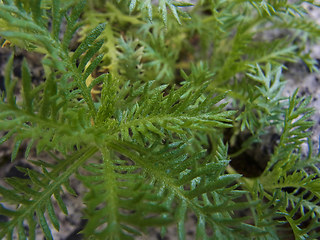
Schwarzrandige Schafgarbe / Achillea Atrata
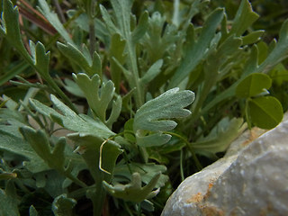
Bittere Schafgarbe / Achillea Clavennae
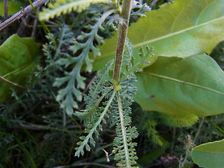
Gewöhnliche Schafgarbe / Achillea Millefolium
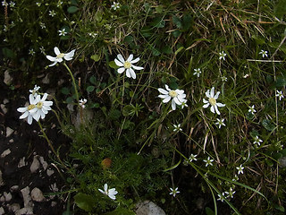
Dolomiten Schafgarbe / Achillea Oxyloba
Gewöhnliche Giersch / Aegopodium Podagraria
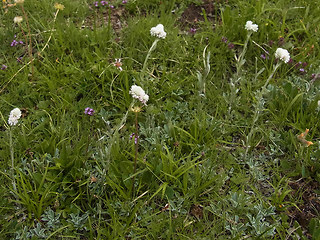
Gewöhnliches Katzenpfötchen / Antennaria Dioica
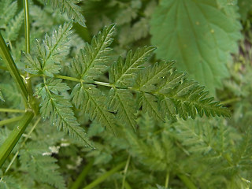
Wiesen Kerbel / Anthriscus Sylvestris
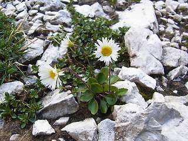
Alpenmaβliebchen / Bellidiastrum Michel
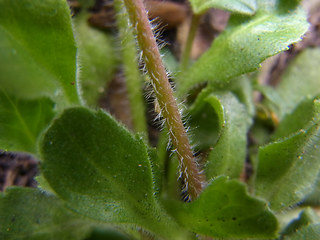
Gänseblümchen Maβliebchen / Bellis Perennis
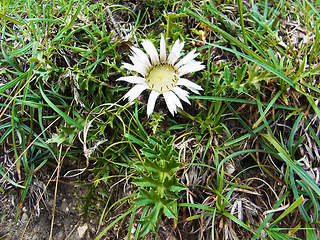
Gewöhnliche Silberdistel / Carlina Acaulis ssp. acaulis
Taumel Kälberkropf / Chaerophyllum Temulum
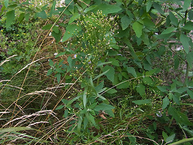
Kanadisches Berufkraut / Conyza Canadensis
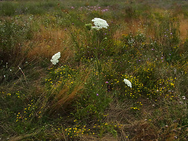
Wilde Möhre / Daucus Carota ssp. carota
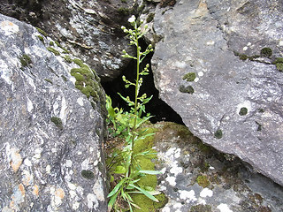
Scharfes Berufkraut / Erigeron Acris
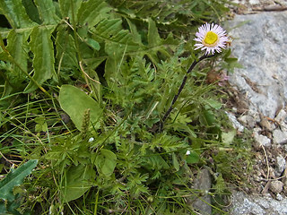
Alpen Berufkraut / Erigeron Alpinus
Einjähriges Berufkraut / Erigeron Annuus
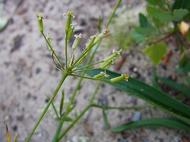
Gemeine Sichelmöhre / Falcaria Vulgaris
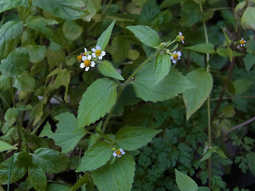
Zottiges Franzosenkraut, zottiges knopfkraut / Galinsoga Ciliata
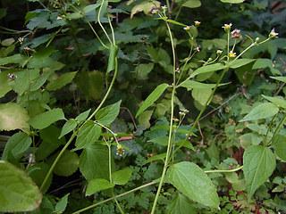
Kleinblütiges Franzosenkraut, kleines knopfkraut / Galinsoga Parviflora
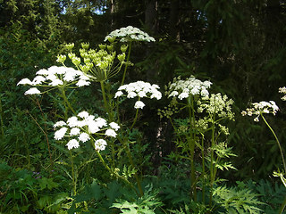
Wiesen Bärenklau / Heracleum Sphondylium
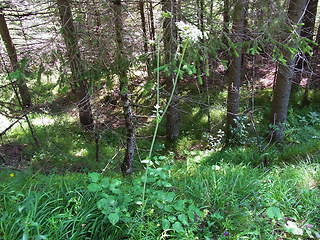
Breitblättriges Laserkraut / Laserpitium Latifolium
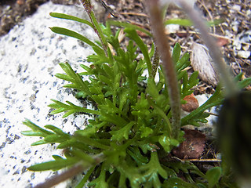
Gewöhnliche Alpenmargerite / Leucanthemopsis Alpina
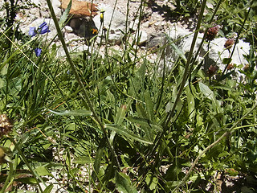
Berg Margerite / Leucanthemum Adustum
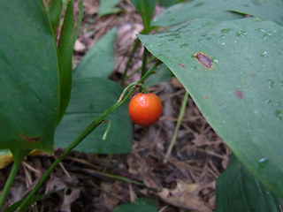
Zweiblättrige Schattenblume / Maianthemum Bifolium
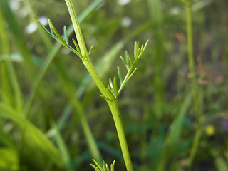
Echte Kamille / Matricaria Chamomilla
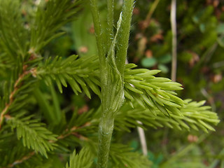
Berg Klee / Trifolium Montanum
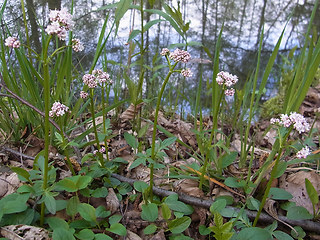
Kleiner Baldrian / Valeriana Dioica
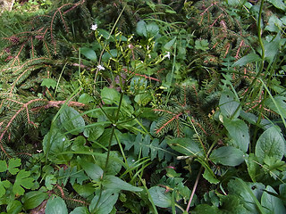
Berg Baldrian / Valeriana Montana
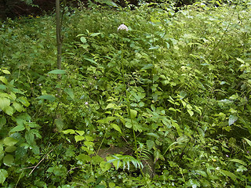
Echter Baldrian / Valeriana Officinalis agg.
Holunderblättriger Baldrian / Valeriana Sambucifolia
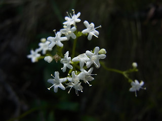
Felsen Baldrian / Valeriana Saxatilis
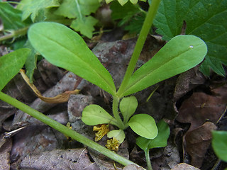
Gewöhnlicher Feldsalat / Valerianella Locusta
nach oben